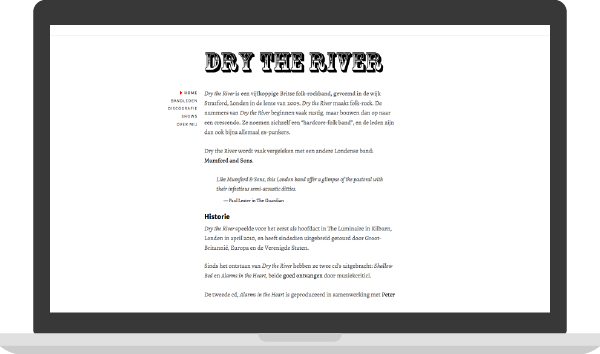

Dry the River
During my study's entry-level internet standards course I built a website about Dry the River, one of my favorite bands. The final website has a strong focus on typography and a clean look. The code is as semantic as I could get it and it validates perfectly at the W3C. I used HTML5 and CSS3 to write it.
